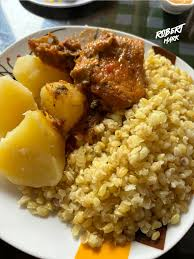
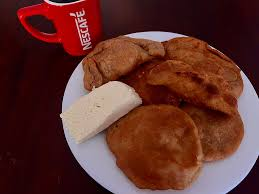
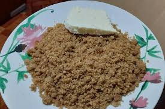
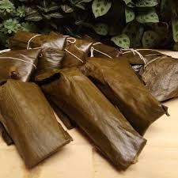
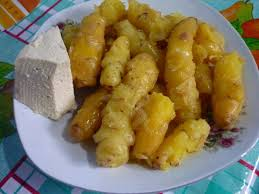
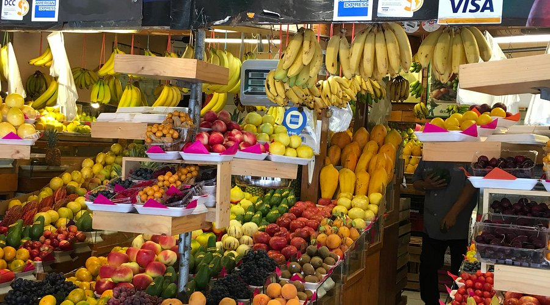
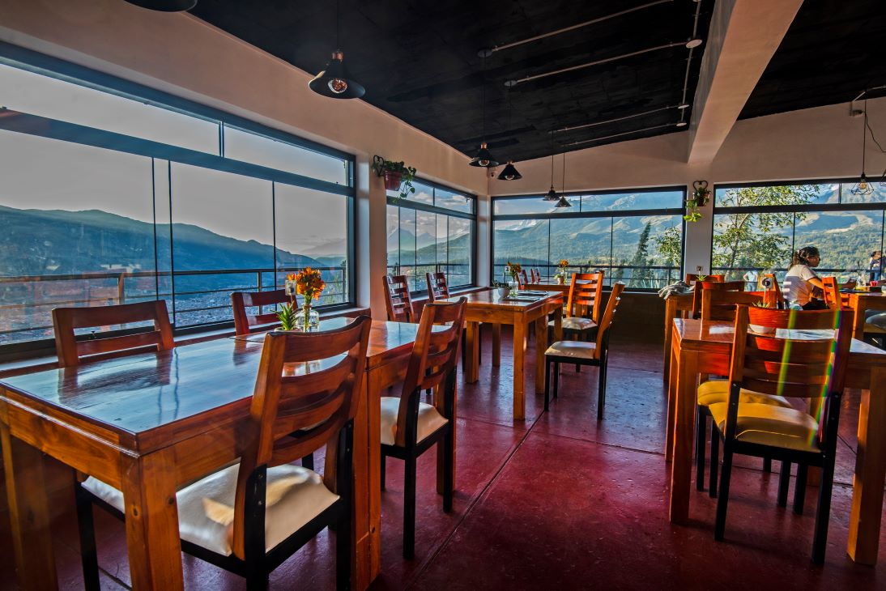
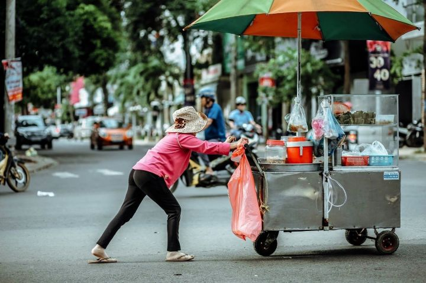

GASTRONOMÍA
Sabores de la Sierra Piurana
La gastronomía de Huarmaca se caracteriza por el uso de productos locales como el trigo, el maíz, la oca y el queso, reflejando la tradición y la identidad cultural de la sierra piurana
Platos Típicos de Huarmaca

Trigo con Gallina

Tortillas con Queso

Sango

Tamales

Humitas

Ocas con Queso

Mote con Chicharrón
Ingredientes Frescos
Los platos se preparan con productos locales cultivados en la zona andina de Huarmaca.
Cocina Tradicional
Técnicas ancestrales transmitidas de generación en generación.
Sabor Auténtico
Experimenta la verdadera esencia de la gastronomía serrana piurana.
¿Dónde Comer en Huarmaca?
Lugares auténticos para disfrutar de la comida tradicional

Mercadillo Municipal
Centro de Huarmaca
Espacios ideales para probar auténtica gastronomía huarmaquina

Restaurantes Locales
Distintos sectores
Comida casera, económica y tradicional

Kioscos y Vendedores Ambulantes
Calles principales
Humitas, tortillas y snacks típicos